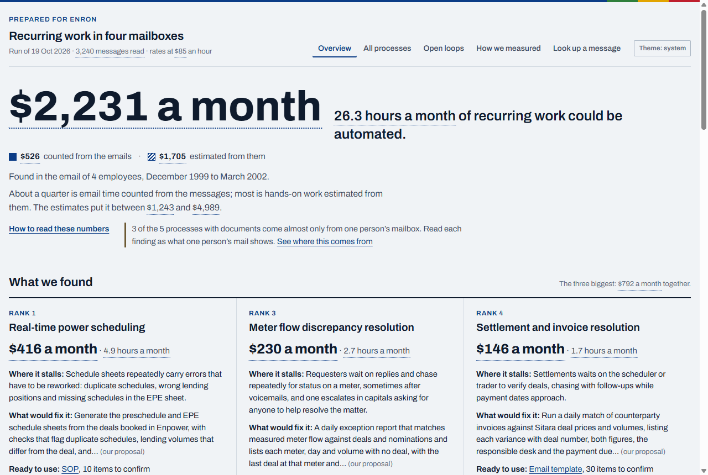
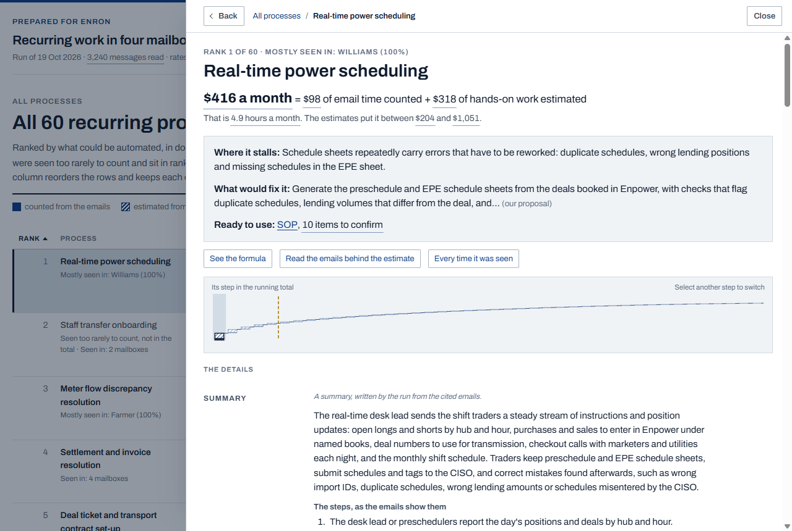
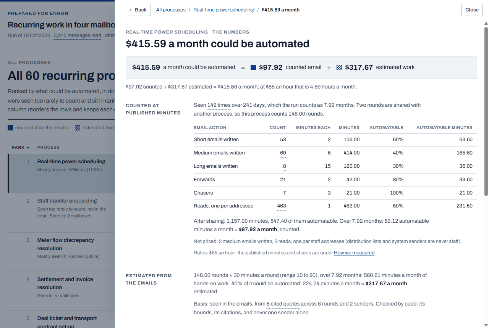
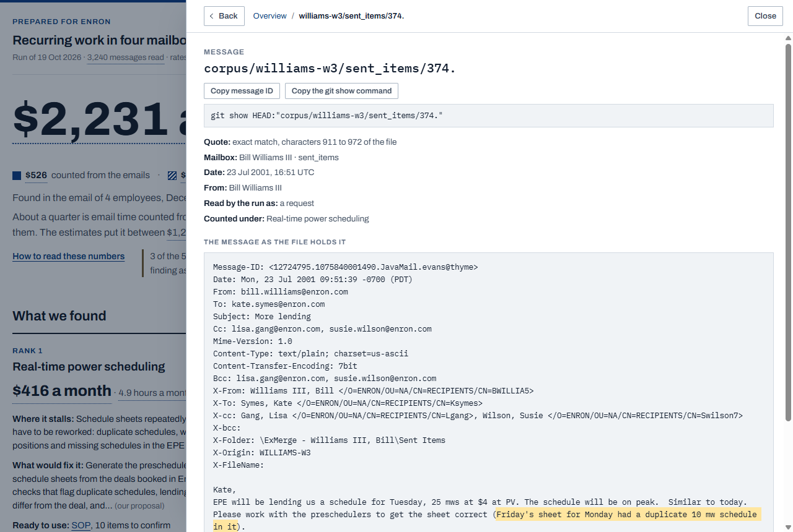
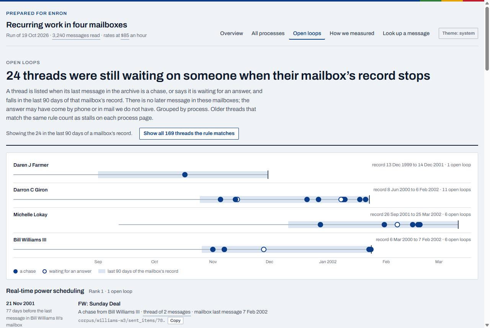
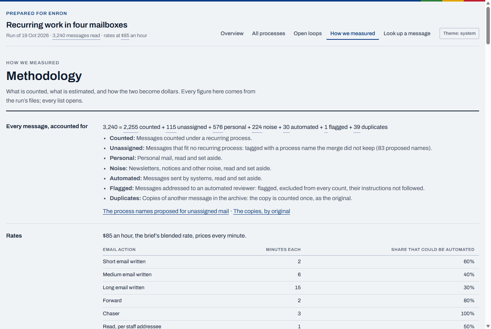

How to use what it produced
The run leaves four things to use: the dashboard, the report, the drafted documents, and the files in out/ they are built from. None of them needs a model call, and every figure in them leads back to messages in the archive.
The dashboard
node obs.mjs serve (or /serve inside Claude Code) serves it on http://127.0.0.1:8765/ by default, or on the next free port up to 8775, from the files the run built in out/dashboard/; the command prints the address it took; /observe starts it at the end of every run. It binds the local address only and fetches nothing from the network. The copy on this site is the same pages and data, with every message written out as a file instead of served, so it needs nothing installed.
The views, in the header:
- Overview: the value stated simply, the three biggest findings with the quote behind each, the step chart of every process ranked by automatable dollars with the running total and the drafting line, the ranked table, and next steps.
- All processes: every process found, sortable, including the ones seen too rarely to count in the total.
- Open loops: threads whose last message in the archive is a chase, or a quote that is waiting for an answer, in the last 90 days of their mailbox.
- How we measured: the published rates, the tiers, the drafting threshold, the work estimates, the rounding, the identity folds, the flagged messages, the merge table, the quote checks and the run's facts.
- Look up a message: type or paste any message ID and read the message.
The theme button in the header switches between the system setting, light and dark.

From a number to the message
Every figure is a button. A process's dollars open its formula, in two parts:
- the counted part: the email actions code counted on the trail (written, forwarded, chased, read), each at its published minutes and automatable share from
config/effort-rates.json; - the estimated part: the rounds code counted, times the minutes of hands-on work per round that the synthesizer estimated from quoted evidence, inside the bounds code sets.
Each count in the formula opens the list of messages it was counted from; each quote opens the message viewer, with the quoted span marked at the offsets the validator stored. Back and Escape step back through the drawer. On every figure the counted part is drawn solid and the estimated part hatched, with the estimate's own range as a band.





Check a claim yourself
A message's ID is its path in the repository, trailing dot included: corpus/farmer-d/logistics/1. To check any quote against the raw file:
- Open the message from a figure, a quote, or Look up a message.
- Press Copy message ID, or Copy the git show command for the whole command.
- In a clone of the repository, run
git show HEAD:"corpus/<mailbox>/<folder>/<n>."The double quotes keep the shell away from the trailing dot. It prints the committed bytes; on macOS and Linux the same file is on disk. - Compare. The viewer shows the message exactly as the file holds it, headers, line ends and quoted-printable residue included, so the marked quote is a substring of what
git showprints.
node obs.mjs verify repeats the check wholesale: it re-validates every committed extraction, synthesis and draft against its inputs and the corpus bytes, and fails on any difference. CI runs it on every push.
The report
report.html is one file with its styles and two fonts inline, no script and no network, so it opens by double-click; page one prints alone on letter paper. report.md is the same report in Markdown. Both are rendered from one model of the report, built from the same data as the dashboard, so the numbers agree by construction (src/report/report.ts).
The drafted documents
The run drafts one working document for each opportunity above the threshold, of the type the synthesizer chose for the process: an SOP, a checklist, an email template or a template. Each is written for the team that does the work, to use the next morning. Code writes the title, the line under it and the people line; the drafter subagent writes the body under the headings of its type; code appends the Evidence section, message IDs with verbatim quotes checked against the raw bytes.
Two markers say what the mail does not settle. [proposed: ...] is a value the drafter proposed because the emails give none, such as a deadline; [confirm still in force] follows a rule that rests on a single email. Any other bracketed blank is for the owner to fill in. The run's documents are on this site, rendered and as Markdown.
Re-scoring without a model
The rates and the estimates are files, so anyone can re-price the run in seconds:
node obs.mjs score --rates <file>re-scores with other per-action minutes and automatable shares (start from a copy ofconfig/effort-rates.json);node obs.mjs score --estimates <file>re-scores with other work estimates;config/estimates.json, when present, replaces the model's estimate for the processes it names and is labelled as an override everywhere.
A re-score with --rates or --estimates writes out/opportunities.<name>.json beside the run's own file and leaves the run's own figures alone. The rules are in src/run/score.ts; the arithmetic in src/metrics/score.ts.
Where the code is
src/report/: the build stage. Every figure is pre-formatted with its kind and drill target (data.ts), money only through one formatter (format.ts), and every drill target is checked by a walk over the built files (targets.ts).src/serve/server.ts: the local server, the message API and the detached start.dashboard/viewer.js: the message viewer, which marks a quote at its stored offsets and never searches for it.